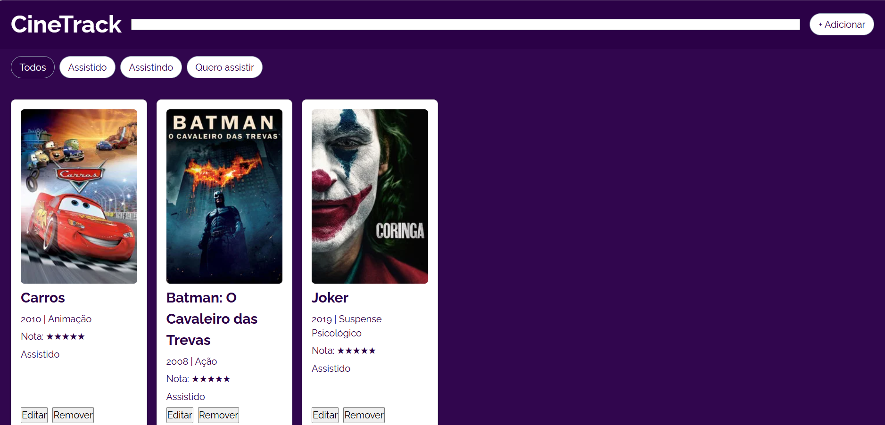

| Título | Ano | Gênero | Status |
|---|---|---|---|
| Carros | 2010 | Animação | Assistido |
| Batman: O Cavaleiro das Trevas | 2008 | Ação | Assistido |
| Joker | 2019 | Suspense Psicológico | Assistido |
| O Senhor dos Anéis | 2001 | Fantasia | Quero Assistir |
| Parasita | 2019 | Suspense | Assistido |
| Duna | 2021 | Ficção Científica | Quero Assistir |
